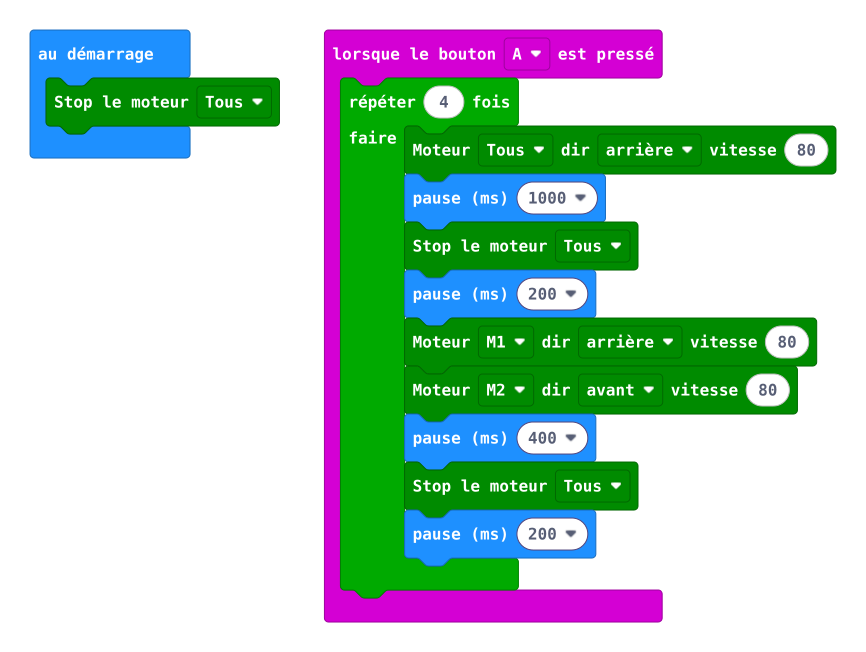
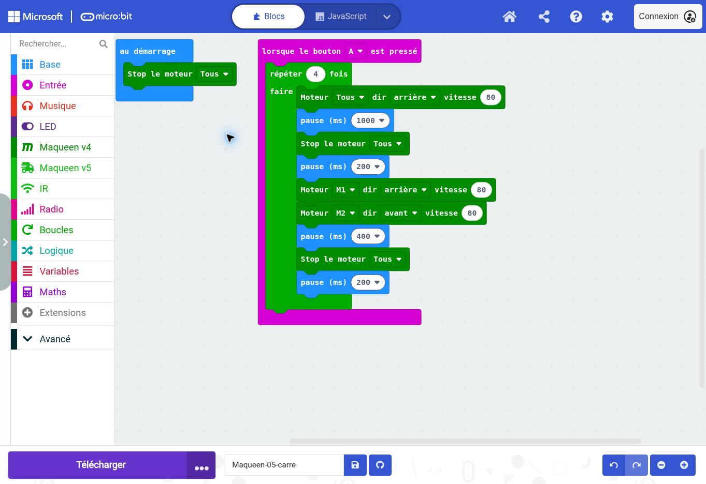

1
maqueen.motorStop(maqueen.Motors.All)
Arrêter les deux moteurs. Ce bloc termine une action ou impose l’arrêt quand une condition le demande. Une pause seule n’arrête pas les roues.
Quelle partie du trajet faut-il répéter ?
Quelle partie du trajet faut-il répéter ?
Vous préparez une activité de technologie. Avant de la proposer à une classe, vous devez comprendre le programme, prévoir son comportement et recueillir une preuve de fonctionnement.
Quand A est pressé, répéter quatre fois : Avancer pendant 1000 ms puis arrêter. Attendre 200 ms. Pivoter à droite pendant 400 ms puis arrêter. Attendre 200 ms.
La capture montre les blocs convertis par MakeCode. Les fichiers HEX sont compilés et contiennent le projet réimportable. La matrice du simulateur ne constitue pas un essai des moteurs ou des capteurs réels.


Les lignes de code ci-dessous servent de repères exacts aux blocs de la capture. Vous pouvez travailler exclusivement dans l’onglet Blocs après avoir importé le HEX.
maqueen.motorStop(maqueen.Motors.All)
Arrêter les deux moteurs. Ce bloc termine une action ou impose l’arrêt quand une condition le demande. Une pause seule n’arrête pas les roues.
input.onButtonPressed(Button.A, function () {
Événement bouton A : déclencher la séquence ou activer le robot. Le contenu accroché sous cet événement s’exécute quand A est pressé.
for (let index = 0; index < 4; index++) {
Répéter le contenu le nombre de fois indiqué. index est le compteur interne ; il ne représente ni une distance ni un angle.
maqueen.motorRun(maqueen.Motors.All, maqueen.Dir.CW, 80)
Commander les deux moteurs vers l’avant (CW), avec la commande 80. Cette valeur est comprise entre 0 et 255 ; elle n’est pas une vitesse en cm/s. La commande continue après ce bloc jusqu’à une nouvelle commande ou un arrêt.
basic.pause(1000)
Attendre 1000 millisecondes. Les moteurs gardent leur dernière commande pendant cette attente. 1000 ms correspondent à 1 s. Le temps réel du cycle inclut aussi les mesures et les autres instructions.
maqueen.motorStop(maqueen.Motors.All)
Arrêter les deux moteurs. Ce bloc termine une action ou impose l’arrêt quand une condition le demande. Une pause seule n’arrête pas les roues.
basic.pause(200)
Attendre 200 millisecondes. Les moteurs gardent leur dernière commande pendant cette attente. 1000 ms correspondent à 1 s. Le temps réel du cycle inclut aussi les mesures et les autres instructions.
maqueen.motorRun(maqueen.Motors.M1, maqueen.Dir.CW, 80)
Commander le moteur gauche M1 vers l’avant (CW), avec la commande 80. Cette valeur est comprise entre 0 et 255 ; elle n’est pas une vitesse en cm/s. La commande continue après ce bloc jusqu’à une nouvelle commande ou un arrêt.
maqueen.motorRun(maqueen.Motors.M2, maqueen.Dir.CCW, 80)
Commander le moteur droit M2 vers l’arrière (CCW), avec la commande 80. Cette valeur est comprise entre 0 et 255 ; elle n’est pas une vitesse en cm/s. La commande continue après ce bloc jusqu’à une nouvelle commande ou un arrêt.
basic.pause(400)
Attendre 400 millisecondes. Les moteurs gardent leur dernière commande pendant cette attente. 1000 ms correspondent à 1 s. Le temps réel du cycle inclut aussi les mesures et les autres instructions.
maqueen.motorStop(maqueen.Motors.All)
Arrêter les deux moteurs. Ce bloc termine une action ou impose l’arrêt quand une condition le demande. Une pause seule n’arrête pas les roues.
basic.pause(200)
Attendre 200 millisecondes. Les moteurs gardent leur dernière commande pendant cette attente. 1000 ms correspondent à 1 s. Le temps réel du cycle inclut aussi les mesures et les autres instructions.
Pour chaque essai : noter la prévision, le réglage, l’observation et l’écart. Ne modifier qu’un paramètre à la fois.
Changer le nombre de répétitions à 3 et prévoir la trajectoire sans changer l’angle.
Écrivez votre prévision avant de lancer. Après l’essai, expliquez l’écart avec les commandes et les informations disponibles.
Distinguer répétition et duplication de blocs. Faire analyser l’accumulation des erreurs. L’objectif est un carré approché et expliqué.
Besoin d’appui : fournir la table de décision ou l’algorithme, puis demander d’expliquer une commande avant le transfert. Donner d’abord un indice, ensuite un bloc, enfin la solution seulement si nécessaire.
Autonomie : fournir la situation et les critères ; laisser choisir les paramètres et comparer deux solutions. Demander une justification écrite et un contre-exemple.
Recueillir une prévision, un programme annoté et un relevé d’essais. Une réussite du robot seule ne prouve pas la compréhension. Demander : « Quelle information déclenche cette action ? Que se passerait-il si ce bloc disparaissait ? »
Sans étalonnage du pivot, quatre répétitions ne produisent pas nécessairement un carré.
Vérification réalisée : conversion en blocs et export compilé depuis MakeCode. Aucun robot physique connecté ; les essais et réglages mécaniques restent à réaliser sur votre matériel.